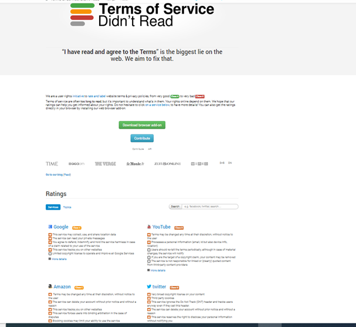

Transparency in End User License Agreements
Student materials
Overview
Ethics background required: Students should be familiar with the four ethical frameworks presented in the first year curriculum (virtue ethics, deontology, utilitarianism, analogies). If they (or the professor) are not, brief summaries are provided in the activity section.
Subject matter referred to in this lab: Software, e-commerce, and/or social media user agreements.
Placement in overall ethics curriculum:
- We recommend that this lab be used in years 2-4, Software Engineering or other Software design courses.
- Recommended previous labs: Foundational Labs
- Recommended follow-up labs: Algorithmic Bias lab also refers to transparency, so this is a nice introduction to that lab, or the Algorithmic Bias lab could be the lead-in.
Time required:
Out of class: None, however if teaching an online course, an online version is also included__along with a peer-review assignment.
In class: 30 minutes
Learning objectives: Students will be able to
- List featrues of user agreements that lack transparency.
- Consider what can be done about lack of transparency, weighing pros and cons of the solutions.
- Practice critical thinking, and articulating observations.
- Review and apply the ethical frameworks (virtue ethics, utilitarianism, deontological ethics, and analogyr).
Ethical issues to be considered: Transparency
Transparency has become an issue in computing lately including transparency in how an AI makes decisions or how a predictive algorithm produces recommendations. This lab focuses on end user licensing agreements. Such agreements are required for user and company safety, but are often unread. Using online tools, students explore the actual complexity of such agreements, consider solutions, and contemplate how to discuss the solutions with their superiors.
Flow
- Students are polled regarding the reading of software/e-commerce site user agreements
- Students consider the definition of transparency and evaluate the transparency of user agreements from student-chosen sites using readability metrics
- Students brainstorm and evaluate solutions to the difficult user agreements
- Students practice making an argument about the ethicality of a complex user agreement
Preparation:
Read entire lab
Find a user agreement yourself and test it using the tool found here as you will be asking your students to use: https://readabilityformulas.com/freetests/six-readability-formulas.php
Glance at the bullet-pointed user agreements found here:
Remind students that they will need to have access to a computer or tablets for this lab. (A smart phone might work in a pinch.)
If this lab is to be presented online
- See online addendum. Students go through the assignment and then peer-review the assignment of another student.
Guide for Instructors
Lesson plan
Introduction (5 minutes)
Ask students to respond to: “How many of you completely read all user agreements presented to you online before clicking ‘I agree’?” If few or no one raises their hand ask “how many completely read 50% of them?” “How many of you completely ignore all of them?”
Most students these days will admit to clicking without reading. Even if students don’t admit this, studies show that most people (91%) routinely accept online agreements without actually reading them. The next question to ask students is “Why?” Why do we accept them without reading?
Possible answers:
- They are too long.
- They are too hard to read.
- I want access to the product so I need to agree regardless of whether I want to so why bother reading them.
Ask students which sites/software products they have had to sign user agreements for and make a list that is available for all students to see. (Examples: Facebook, Instagram, Snapchat, Microsoft Windows, Amazon App etc.)
Activity (15 minutes)
Read or summarize to students: One of the ethical issues that computing professionals have to consider today is transparency. Transparency can be defined as: “Representing data, algorithms, or any information that affects a user in an open, explicit, and easily comprehensible format”
Readability scales exist today that rate the accessibility of documents to people of various educational backgrounds based on such factors as the length of a document, the length of sentences, and the complexity of the words used. One such scale, the Flesch-Kincaid readability test is actually built into word processors such as Microsoft Word. At the time of this writing, a website that ranked documents using several different tools could be found at the following URL:
https://readabilityformulas.com/freetests/six-readability-formulas.php
Assign groups of 2-3 students to find and evaluate (using tools found on the web or a word processor) end user license agreements (sometimes called EULAs) for one of the sites the class listed earlier. It is probably best to actually assign these so there is no overlap. The job of the students will be to summarize to the class the difficulty ratings, and statistics about the number of words in the agreement.
Example: When the Instagram EULA was pasted into the tool from https://readabilityformulas.com, the following information was included in the output:
Grade Level: 14
Reading Level: difficult to read.
Reader’s Age: 21-22 yrs. old (college level)
Total # of words: 1093
Average # of syllables per word: 2
Percent of 3+ syllables in text: 21%
Once all teams have reported, and the difficulty results (maybe age group and education level) have been written next to the site name on the list created in the introduction, discuss the transparency of each of these user agreements. Consider who the intended audience would be. (Instagram, for example, expects users to be 13+ and yet the reading level is 21+)
Reflection in groups and then as a class (10 minutes)
Read or Summarize to the students: Imagine that you are close to finishing a software project that you have managed and that you have seen the user agreement that is supposed to be attached to the product. It is long and clearly written for those with a college level English proficiency. However, the software product is expected to be used by a segment of the US population where 50% of the users do not claim English as their native language.
You believe that this user agreement is unethical. Because you were introduced to ethical frameworks in college, you immediately recognize that this document violates the virtue of transparency, and go to your supervisor with that argument. The supervisor’s response is that the legal team does not see transparency as a virtue – they see protecting their company as a virtue. So much for the Virtue Ethics argument. Furthermore, there is no rule in the company against using fancy language. So much for an argument from the deontology (rules-based) framework! That leaves you with two ethical frameworks with which you are familiar to argue your point. Recall the two frameworks that remain:
Analogies: Arguing the ethicality of a situation based on a similar situation where the ethicality of the similar situation was widely accepted
Utilitarianism: Arguing the ethicality of a situation based on what is best for the majority
Which would you choose and how would you use it?
Have students work in their groups to come up with the most compelling argument they can using one of the frameworks. You might have the class vote on the best argument!
Possible answers:
Utilitarianism is probably the easiest choice since it might be hard to find an analogy. A clear and concise user agreement would be good for the masses. However, it might not protect the company sufficiently. Lawsuits are rampant. It might be helpful to include a longer agreement in plain English along with an “executive summary”. Examples of “executive summaries” can be found at https://tosdr.org/. This is an organization dedicated to clarifying what the user agreement really means. See sample page below.
An analogy might be an agreement signed by a patient prior to surgery. Most agreements require the patient to understand the risks and agree to arbitration. In this situation, the patient (or representative) is asked many times, if they understand and if they agree. The medical personnel try to state the main risks in a few clear sentences. (This is similar to the above suggestion about an executive summary). Often the patient must agree to arbitration for any issues that do arise.
Ask students: Regardless of what you choose, the company still needs to be protected. User Agreements were put into place in part to protect the company. Can you make a recommendation as to what they should use instead of using the current agreement? Is there a way to make the agreement more user-friendly?
For the instructor
A search for articles provides other suggestions for dealing with a necessary but more user-friendly user agreement. One such article is found at this link: https://www.mindtheproduct.com/improving-ux-terms-conditions-page-6-easy-ways/
Their ideas include:
Add a table of contents with links to each section
Use a large font so it is easy to read
Include an FAQ page
Additional information to provide for the class:
A sample of the service mentioned in the Utilitarianism argument.

Students might be interested in this article, which claims that plain language contracts on becoming more popular
Assessment
- Which virtue(s) does a complex user agreement violate?
- Transparency, for sure, but maybe also honesty or dignity.
- What was one method suggested for making user agreements more accessible?
- Table of contents, FAQ page, Executive summary, Plain English.
- What was an argument in support of the lack of ethicality of the hypothetical complex user agreement made by classmates that used either the Utilitarian or Analogies frameworks?
- Answers would depend on your particular class.